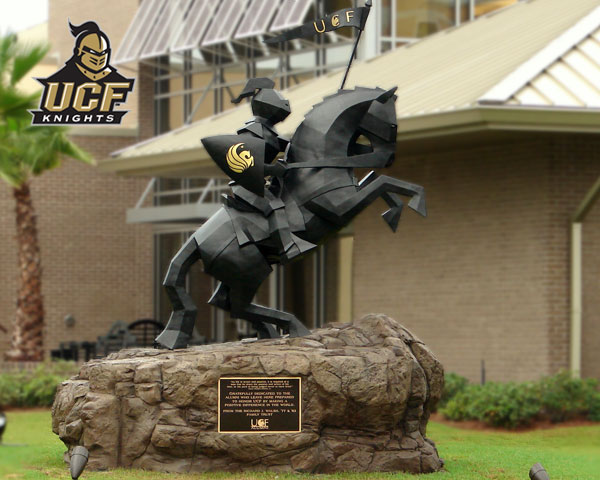
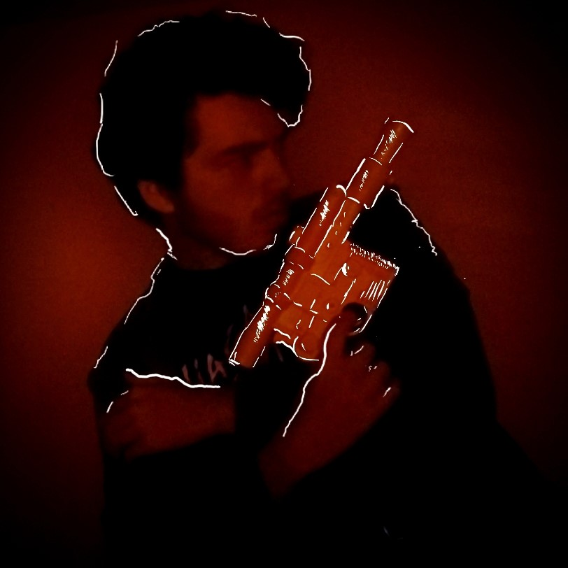
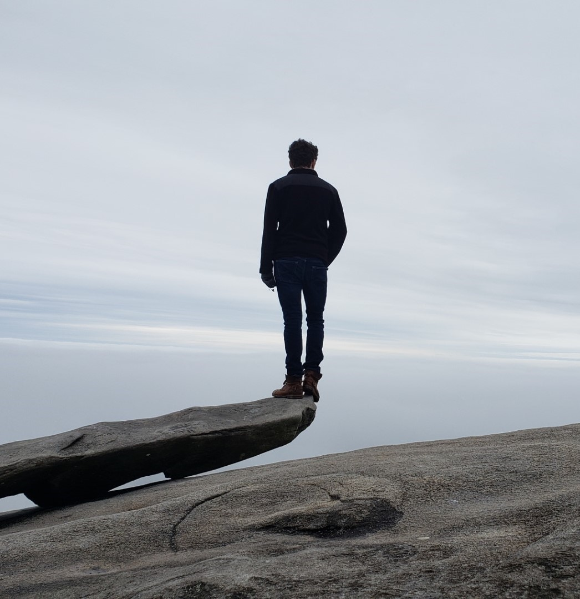
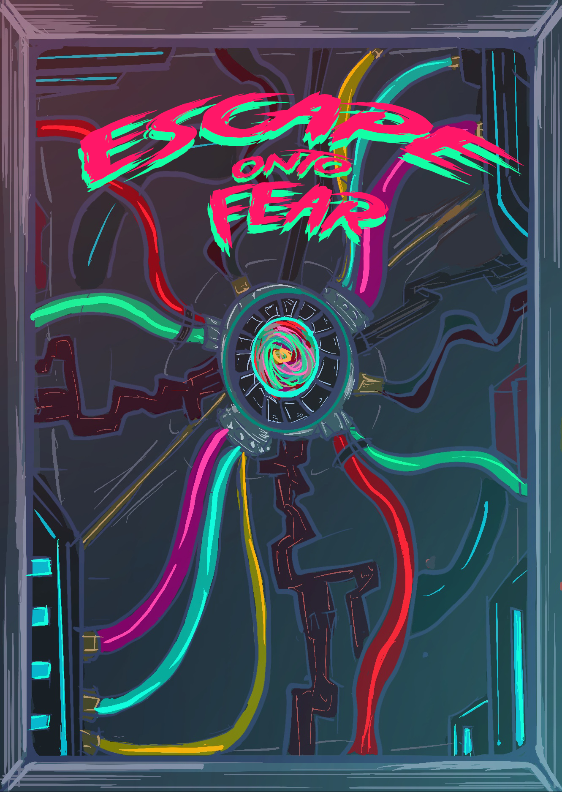
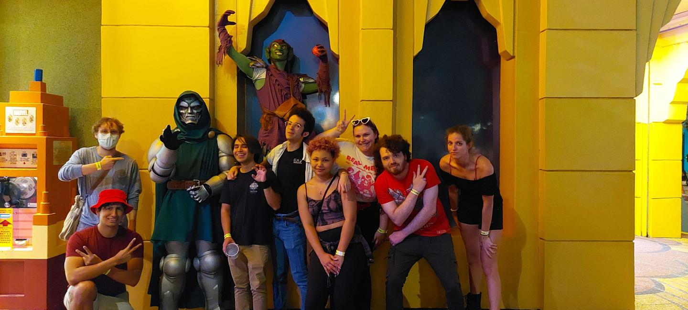

<!DOCTYPE html>
<html lang="en"></html>
<nav class="grid nav">        
<meta name="viewport" content="width=device-width, initial-scale=1">  <!-- Vieport-->

<head>
    <Title>My Journey</Title>
    <link rel="stylesheet" href="stylings/main.css"> <!-- link to css-->
</head>

<body>
    <div class= grid>  <!-- Grid-->
        <div class="bar grid-item wide ">
            <nav>
             <a href = "index.html">Home</a>
             <a href = "#section-3"> My Journey </a>
             <a href="#section-1"> Destination</a>
             <a href="#section-2">Experiences</a><br />  <!-- id for all the nav elements as they correctly should jump you to that part of the page when clicked -->
            </nav> 
           </div>
        <div class="bars1 grid-item wide Img container">  <!-- container bars 1-14 are conditionals-->
            
        </div> 

        <div class="grid-item wide bars2"><h1>
            My Journey at UCF
    
        </h1></div>
        <div class="grid-item wide bars3"><h2 id="section-3">
            How did we get here?
        </h2></div>
    
        
        <div class="grid-item bars4">
            This is me!
        </div>
        <div class="grid-item bars5"><p>  <!--Intro -->
            My name is Max Martinez and I have been a student at the University of Central Florida for almost 2 years now. Now I wasn't
            always a UCF student, in fact UCF was not my first University, fresh out of high school I enrolled for multiple universities, now
            at the time I was not sure what I wanted to do exactly, before this I had taken an animation course at the College Institutes of the Arts
            in Chicago. After taking that course I was set on studying the art of animation and getting my major doing that, of Course I applied to many places.
             Art school although great seemed a little too expensive for me, I would have had to go into quite a bit of debt, So I instead found this course 
            through a friend in the states for animation in Kenesaw State University, which I enrolled and was accepted. Now I am from Puerto Rico so transitioning 
            to go out and live completely outside my little island was a big thing for me. After a year there I felt a little uncertain so I decided to change schools
            that is when I applied to UCF, as I thought to myself what I really wanted to do, Game Design came to mind. From then on I moved to orlando to Study at UCF.

        </p></div>
        <div class="grid-item bars6">
            At a mountain.
        </div>
        <div class="grid-item wide bars7"><h2 id="section-1">
            The Destination
        </h2></div>
        <div class="grid-item bars8 ">
            Escape Onto Fear
        </div>
        <div class="grid-item bars9"><p>
            I always ponder thinking were exactly will I end up after I graduate. It is impossible for me to Know the future but I like to think there are some places I would like
            to be after This. I consider myself a creative and I have always had the dream to work on some kind of visual media like film or game design, because of this my original
            major was that of animation. Animation is a profession that is very intensive and demanding of your own personal skill, and while for a while I did try it out, I found myself
            a little too anxious of it that is when I thought to myself, "Where do I want to be?". Well I ultimately want to work on a project like a game the same type of games 
            that have inspire and shaped me throughout my entire life, not just as a past time but also as an experience and artform. This is why I changed my major to game design.I am already working
            on a tabletop game called "Escape Onto Fear" which I have made the artwork for myself, as well as some other minor projects in unity and maya.
            so in a few years I want to open a studio with my friends, to create unique games and experiences that many people across the glove will be able to enjoy. Completing my major
            is the first step to get closer to what I envision myself as a creator.

        </p></div>

        <div class="grid-item bars10">
            Environment Art
        </div>

        <div class="grid-item wide bars11">  <!-- Embedded Youtube video of one of my animations-->
            <iframe width="560" height="315" src="https://www.youtube.com/embed/OlT88FF-qag" title="YouTube video player" frameborder="0" allow="accelerometer; autoplay; clipboard-write; encrypted-media; gyroscope; picture-in-picture; web-share" allowfullscreen></iframe> 
        </div>

       </div>
       <div class="grid-item wide bars12"><h2 id="section-2">
        My Experiences
       </h2></div>
       <div class="grid-item bars13"><p>
        Over the little time I have been at UCF, I think I have grown and learn a lot as an individual. I've completely changed my outlook on things when I came here,
        I didn't really know at first what I wanted to do or who i wanted to be, but that is something I learn through experience and many experiences I have had on campus
        From professor have been very forgiving to those who have not, they all have tought me something about my personality, I still recall my totem project for my 3D class 
        that we made out of wood, it was a fun experience and I met a few folks along the way, I also have gone ahead and participated in a lot of club and their various activities,
        From board game groups to a club about music where I learned and met new friend. Even to visiting the Universal theme parks via the student government. I believe my connections
        and the things I have learned here are what will lead me to the destination that I envision myself for, and me taking those steps forward is something that I feel daunting but also
        very enthusiastic about. 

    </p></div>

    <div class="grid-item wide bars14">
        Emo Club at Universal Knights
    </div>
    


        
        
    </div>

</body>
</html>

